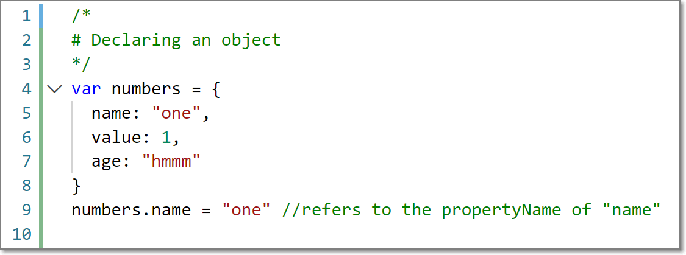

Sprint-03 Technical Blog
11th September 2020
| Understanding the differences between HTML and CSS |
|---|
When starting to understand the structure of creating modern day webpages it is key to understand how the different pieces connect to and work with each other to create the impressive, interactive and appealing webpages of today. A good analogy to think about is that of a car. If we think of <html> as the chassis of a car, it provides the structure to allow you to add the elements that you need. While you might not be able to see it easily, without the <html> a webpage won't run, just like a chassis in a car! For example: an element of <html> is the <header>. The <header> could be associated with headlights on a car. The headlights have to be fitted to the chassis to be stable and connected to the wiring system to be powered up, in the same way a <header> has to be imbedded into the <html> to render correctly.
All cars have chassis', however not all cars are of the same brand. Car enthusiasts are able to look quickly at a vehicle and tell you exactly what brand of vehicle you are looking at. CSS is like the brand of a car. It defines how the vehicle will look. It provides methods and means to determine how for example users will see the headlights on your car and what colour they will shine.
| Thinking abou the control flow and loops (using an example process from everyday life) |
|---|
Within programming languages there is a term called control flow. This is talking about the control of execution of commands in the programming language. Like water the control of a programme will flow in a logical order unless it encounters instructions where it has to behave differently as water would when it comes into contact with a dam or a rock.
In the instance where a progamme, encounters something unusual it will assess the instruction and act accordingly. Like water when it comes into contact with a rock, it will find the path of least resistance and proceed. This can be seen when looking a loops within programming. A loop like a water will continue to flow in the path of least resistance as long as the conditions that are needed for the flow to continue remain true. To provide an everyday example of the control flow of a loop think of eating breakfast.
To be able to eat breakfast certain elements need to remain true.
1. The person eating must be hungry
2. Food must be available
A programming loop of this might look like the following:
 |
|---|
The programme will continue to assess the hungry or food_is_available variables and leave control with the loop while hungryand food_available remain true, it will continue to execute the function continueToEatBreakfast(). As soon as either hungry or food_available are no longer true the programme will stop executing the loop and continue through the code.
| .....the DOM and an example of to interact with it |
|---|
The Document Object Model or DOM for short is the glue that makes up a document within a webpage. It is the <html> document as a tree structure where in each node is an object representing a part of the document. This is captured well at a high level by Kirupa Channathambi in his video javascript, the broswer and the DOM as per the image below:
A key reason to interact with the DOM is especially important in the placement of elements on a page. As mentioned in the Sprint-02 Technical Blog the positioning of items within a webpage is dependent on the parent object of a child element, and where it is located in a page. Understanding the structure above allows a webpage to display items in the correct place on a webpage.
Explain the difference between accessing data from arrays and objects
Arrays and Objects in programming can be quite confusing, they may look very similar in structure, behave in a very similar manners, but they are in fact quite different.
An Array in JavaScript is a single variable that is used to store different elements - GeeksforGeeks.
An Object on the other hand "loosely speaking, may be defined as an unordered collection of related data, of primitive or reference types, in the form of “key: value” pairs" - GeeksforGeeks.
The key difference between the two is the way data is accessed in both.
An Array uses a position to determine where and element is e.g.
 |
|---|
Unlike humans a programme starts counting at 0 rather than 1. So as can be seen from the above element "one" is located at position numbersArray[0].
AnObject on the other hand uses a unique identifier to locate an element called a propertyName e.g.
|  |
|---|
In the above example numbers has three properties. To find the correct property of an object a programme needs to use one of its propertyName values to correctly identify the property as is seen on line 10 of the code.
| Functions: what they are and why they are useful |
|---|
A Function in JavaScript is a set of statements that take inputs, do some specific computation, and produces output - GeeksforGeeks.
They are useful because they are able to streamline repetative behaviour allowing reuse of code instead of repeating it. ***See the continueToEatBreakfast() example above! They also have the ability to speed up performance of webpages if implemented correctly.